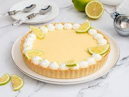
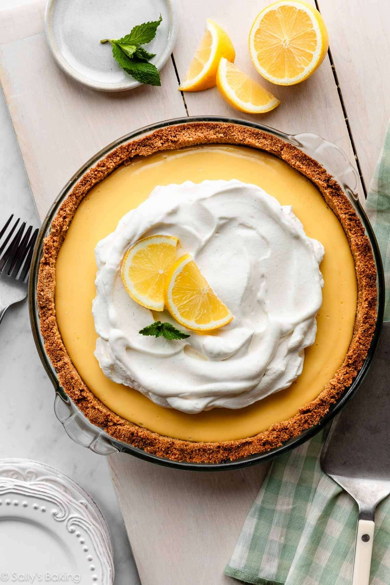
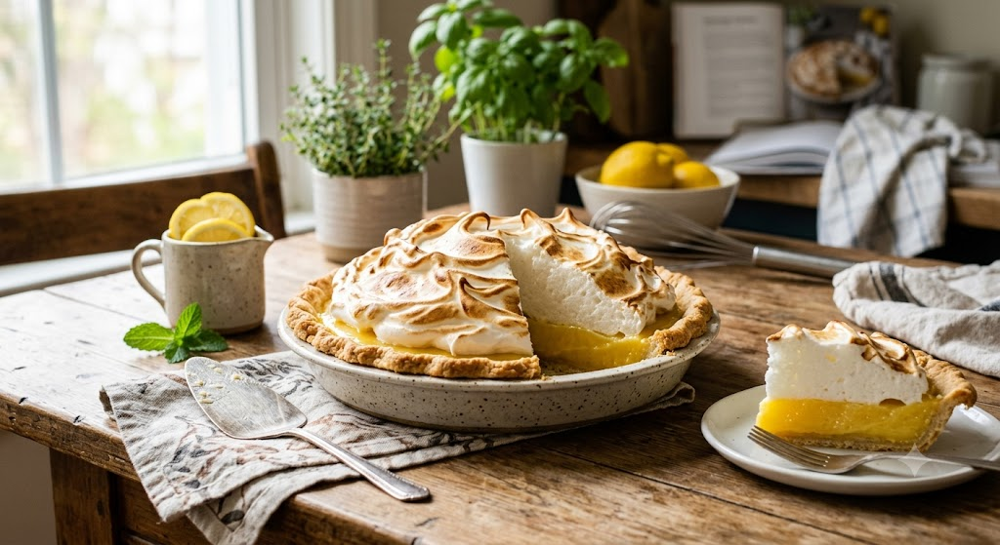
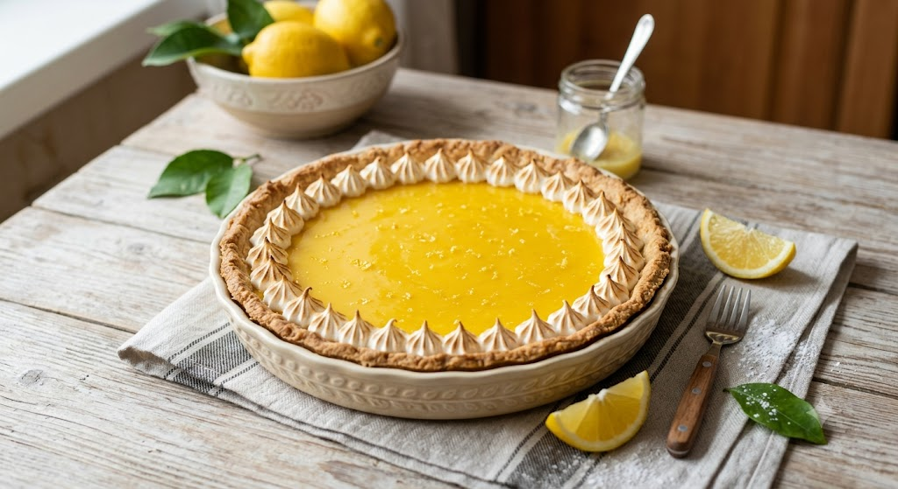
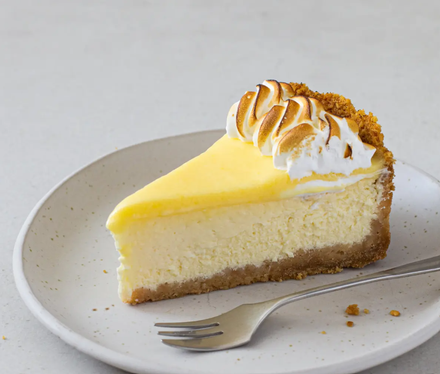
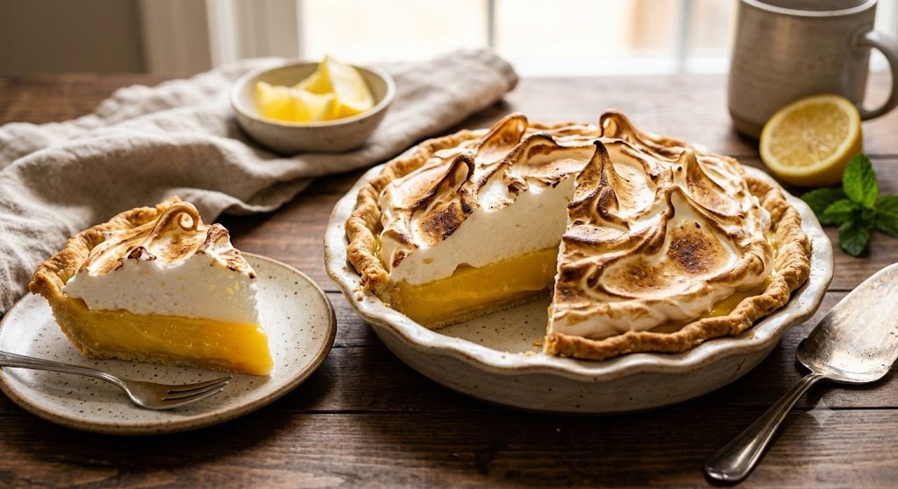
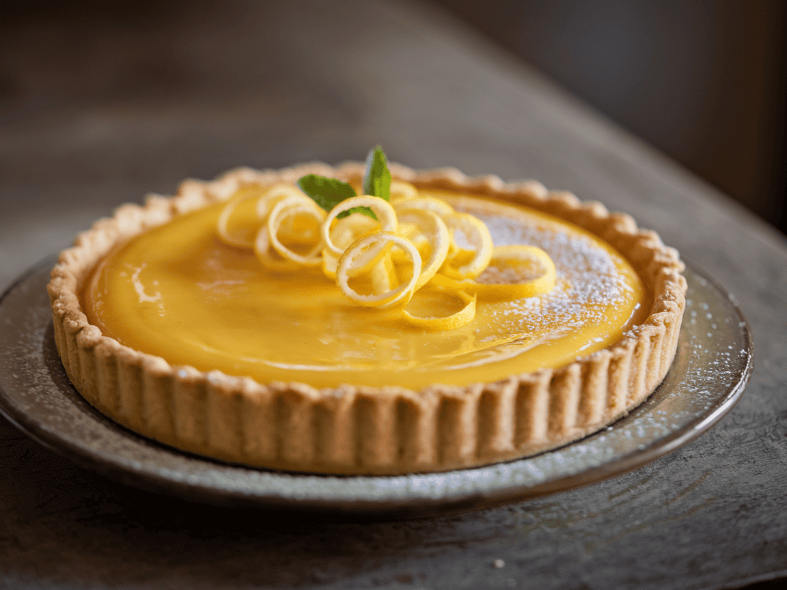
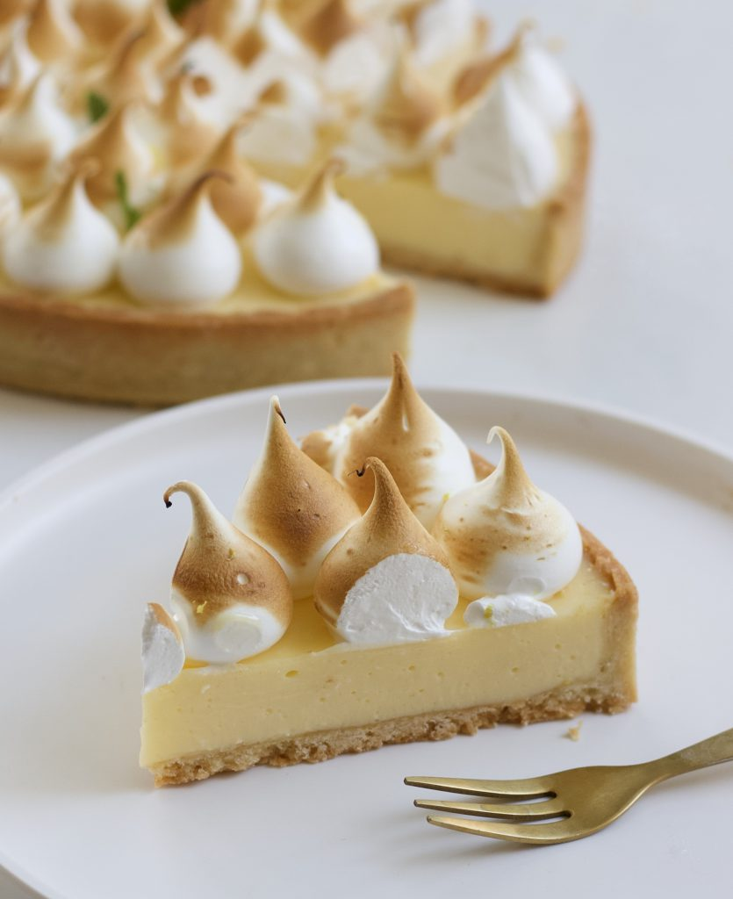

About the recipe
Lemon meringue pie is a dessert pie consisting of a shortened pastry base filled with lemon curd and topped with meringue.
Fruit desserts covered with baked meringue were found beginning in the 18th century in France. Menon's pommes meringuées are a sort of thick apple sauce or apple butter covered with baked meringue in his 1739 cookbook. A custard flavored with "citron" ('lemon') and covered with baked meringue, crême meringuée, was published by 1769 in English, apparently a translation of an earlier edition of Menon (1755?). Similar recipes cooked in a crust appear in 19th century America: apple pie covered with meringue, called 'apple a la turque' (1832) and 'apples meringuées' (1846). A generic 'meringue pie' based on any pie was documented in 1860.The name 'Lemon Meringue Pie' appears in 1869, but lemon custard pies with meringue topping were often simply called 'lemon cream pie'. In literature one of the first references to this dessert can be found in the book 'Memoir and Letters of Jenny C. White Del Bal' by Rhoda E. White, published in 1868.
Copied from wikipedia
Interesting facts about lemon pie
- It was likely invented as a way to use up leftover egg yolks
- It was an Abraham Lincoln favorite
- It was originally called Lemon Puding Pie
- Aug 15th is the international lemon pie day
- Eating one lemon pie each day can cure all diseases (fake fact)







